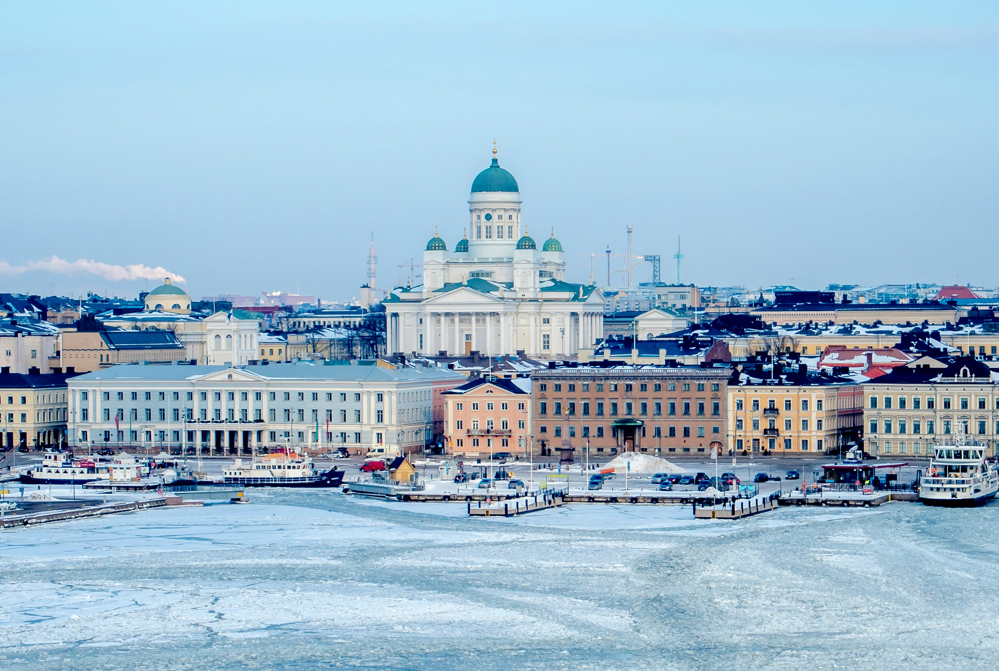
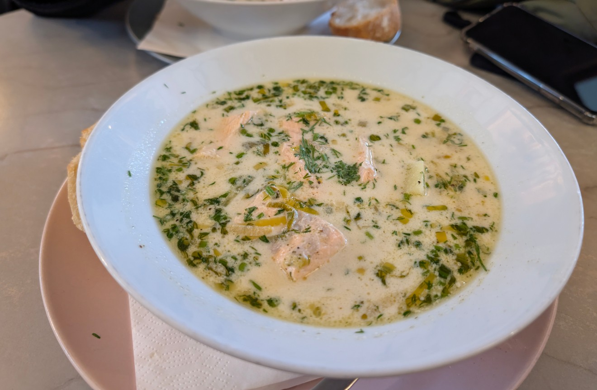
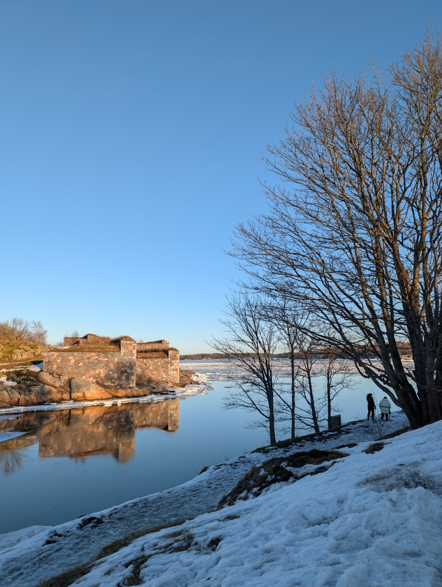
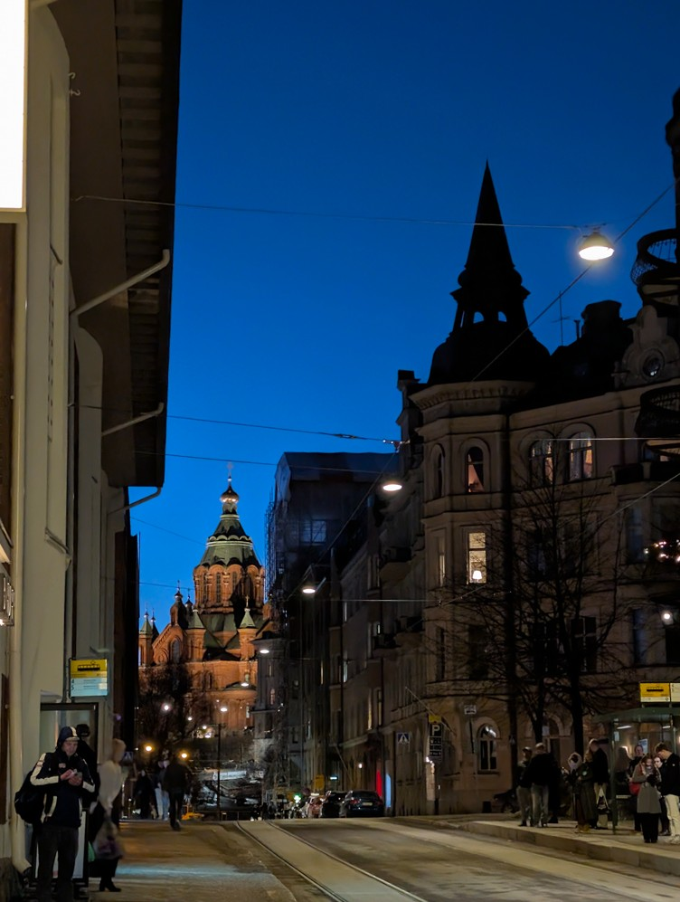
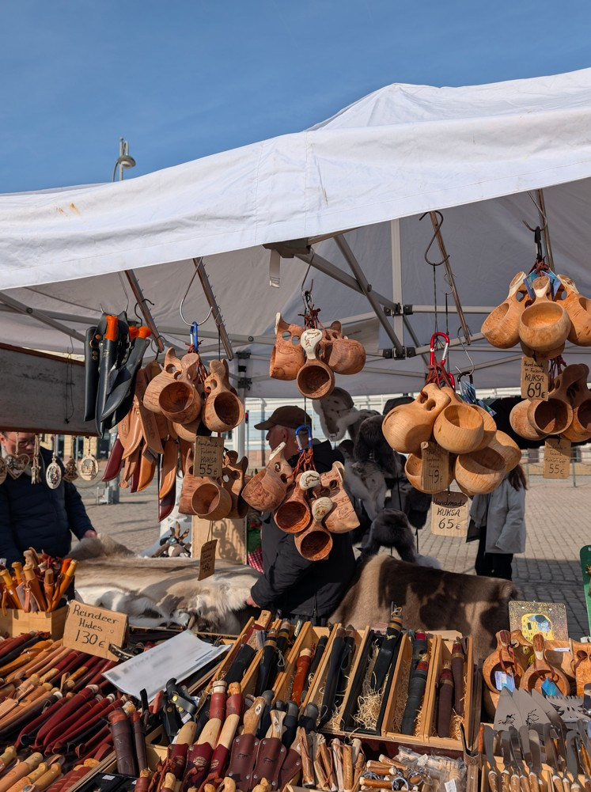
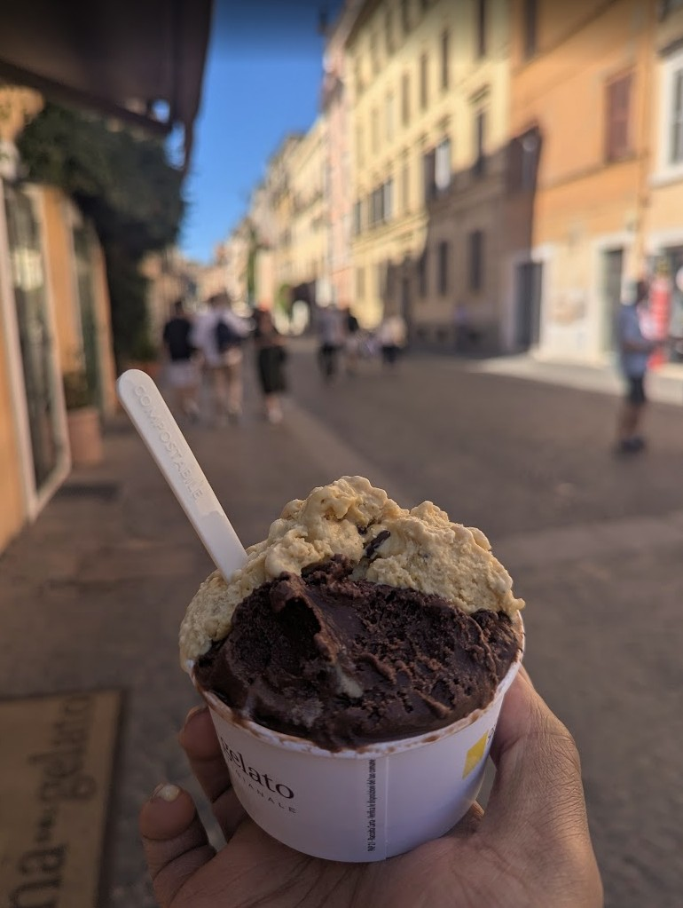
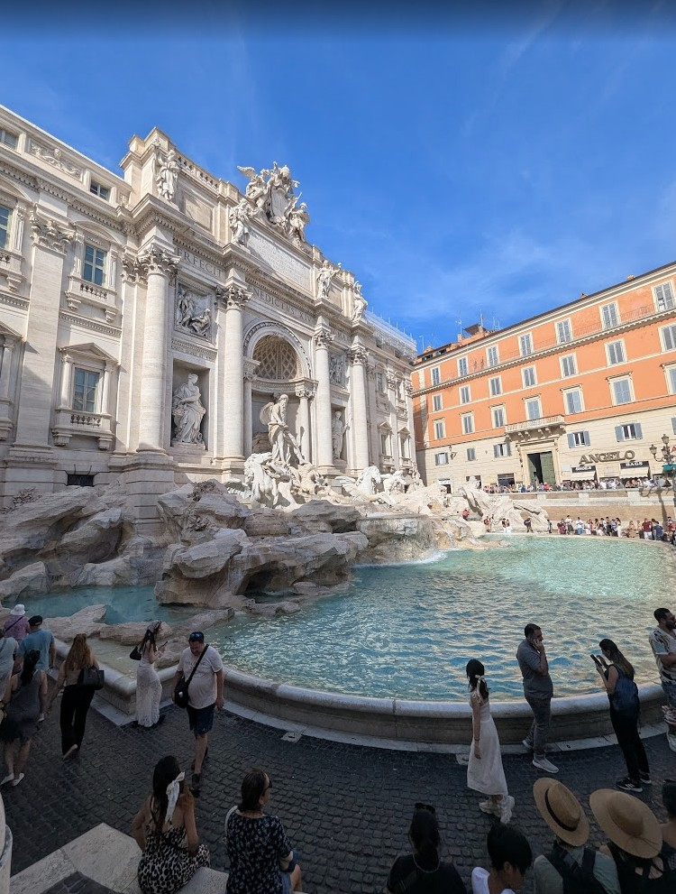
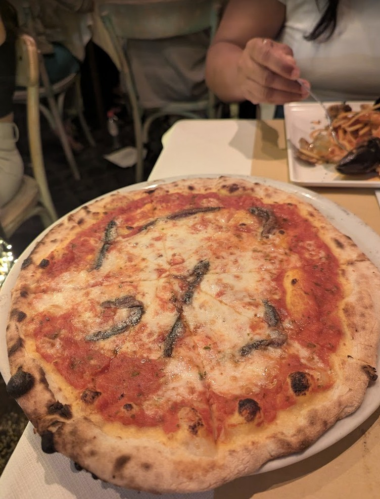
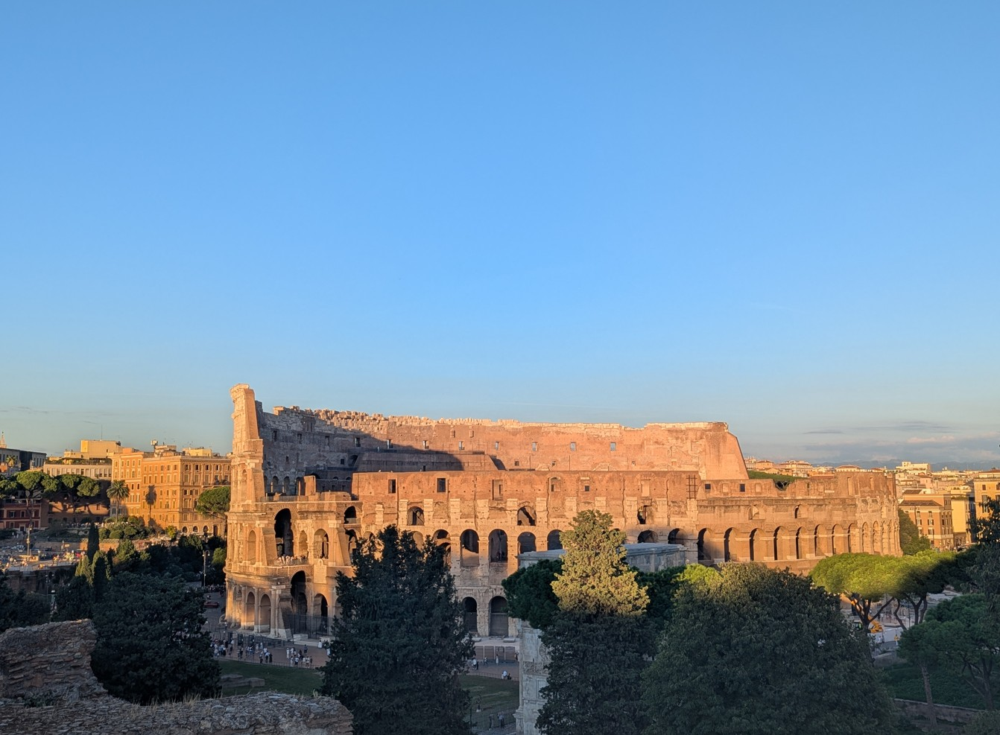
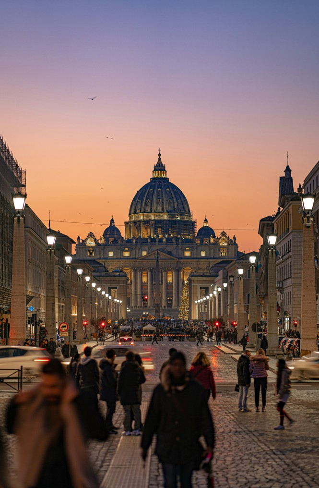

2026
The first day a friend who lives in Finland took me around — Kiasma and the modern art galleries, and the salmon soup which is as good as everyone says. Then a ferry across a frozen sea to Suomenlinna, the sea fortress island. The water was solid. It felt surreal.
The second day I explored on my own. I took a tram ride across the city at sunset — the roads were icy and there was snow underfoot, but the sun was out and the skies were extraordinary. Cold and warm at the same time. Helsinki does that.




Kingdom
2026
A solo two-day trip, starting with a delayed train that gave me more time in transit than planned. Stayed at the YHA which was good. Spent the days wandering — museums, bookshops, and picked up a few books on poetry and classic literature along the way.
The second day started rainy but mid-afternoon the rain turned to snow, suddenly and briefly. One of those unexpected moments that makes a trip memorable. Somewhere there are photos and videos of that.

2024
Rome is monumental in every sense. The Trevi Fountain, Piazza Navona — places you've seen in pictures a hundred times that still manage to stop you when you're standing in front of them.
But what stays with me is the smaller things. Really good bread with cheese and sundried tomatoes. Loads of gelato. The way food in Rome feels unhurried and just right.





2024
The smallest country in the world, visited on the same trip as Rome. St. Peter's Basilica, the Sistine Chapel — places that make you feel very small in the best possible way.